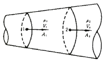
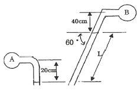
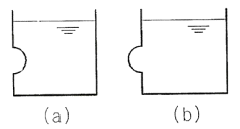
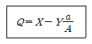
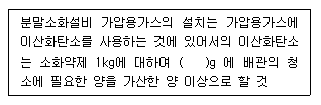

소방설비기사(기계분야) (2011-10-14 기출문제)
1과목: 소방원론
1. 다음 중 분진폭발을 일으킬 가능성이 가장 낮은 것은?
- 마그네슘 분말
- 알루미늄 분말
- 종이분말
- 석회석 분말
(정답률: 71%)

2. 불활성 가스에 해당하는 것은?
- 수증기
- 일산화탄소
- 아르곤
- 아세틸렌
(정답률: 72%)
3. 제1류 위험물에 해당하는 것은?
- 염소산나트륨
- 과염소산
- 나트륨
- 황린
(정답률: 62%)
4. 메탄 80vol%, 에탄 15vol%, 프로판 5vol% 인 혼합가스의 공기 중 폭발 하한계는 약 몇 vol% 인가? (단, 메탄, 에탄 프로판의 공기 중 폭발 하한계는 5.0%, 3.0%, 2.1% 이다.)
- 3.23
- 3.61
- 4.02
- 4.28
(정답률: 49%)
5. 탄화칼슘의 화재시 물을 주수하였을 때 발생하는 가스로 옳은 것은?
- C2H2
- H2
- O2
- C2H6
(정답률: 60%)
6. 탄산수소나트륨이 주성분인 분말소화약제는 제 몇 종 분말인가?
- 제1종
- 제2종
- 제3종
- 제4종
(정답률: 62%)
7. 건축물의 피난ㆍ방화구조 등의 기준에 관한 규칙에 따르면 철망모르타르로서 그 바름두께가 최소 몇 cm 이상인 것을 방화구조로 규정하는가?
- 2
- 2.5
- 3
- 3.5
(정답률: 46%)
8. 피난계획의 일반원칙 중 fool proof 원칙에 해당하는 것은?
- 저지능인 상태에서도 쉽게 식별이 가능하도록 그림이나 색체를 이용하는 원칙
- 피난설비를 반드시 이동식으로 하는 원칙
- 한 가지 피난기구가 고장이 나도 다른 수단을 이용할 수 있도록 고려하는 원칙
- 피난 설비를 첨단화된 전자식으로 하는 원칙
(정답률: 72%)
9. 갑작스런 화재 발생시 인간의 피난 특성으로 틀린 것은?
- 본능적으로 평상시 사용하는 출입구를 사용한다.
- 최초로 행동을 개시한 사람을 따라서 움직인다.
- 공포감으로 인해서 빛을 피하여 어두운 곳으로 몸을 숨긴다.
- 무의식 중에 발화장소의 반대 쪽으로 이동한다.
(정답률: 73%)
10. 0℃ 1기압에서 44.8m3 의 용적을 가진 이산화탄소 가스를 액화하여 얻을 수 있는 액화탄산가스의 무게는 몇 kg 인가?
- 88
- 44
- 22
- 11
(정답률: 48%)
11. 열에너지가 물질을 매개로 하지 않고 전자파의 형태로 옮겨지는 현상은?
- 복사
- 대류
- 승화
- 전도
(정답률: 58%)
12. 피난계획의 기본원칙에 대한 설명으로 옳지 않은 것은?
- 2방향의 피난로를 확보하여야 한다.
- 환자 등 신체적으로 장애가 있는 재해약자를 고려한 계획을 하여야 한다.
- 안전구획을 설정하여야 한다.
- 안전구획은 화재층에서 연기전파를 장비하기 위하여 수직관통부에서의 방화, 방연성능이 요구된다.
(정답률: 65%)
13. 화재 급수에 따른 화재 분류가 틀린 것은?
- A급 - 일반화재
- B급 - 유류화재
- C급 - 가스화재
- D급 - 금속화재
(정답률: 70%)
14. 금수성 물질에 해당하는 것은?
- 트리니트로톨루엔
- 이황화탄소
- 황린
- 칼륨
(정답률: 55%)
15. 건축물의 주요 구조부에 해당되지 않는 것은?
- 내력벽
- 기둥
- 주계단
- 작은 보
(정답률: 71%)
16. 가연물이 되기 위한 조건으로 가장 거리가 먼 것은?
- 열전도율이 클 것
- 산소와 친화력이 좋을 것
- 표면적이 넓은 것
- 활성화에너지가 작을 것
(정답률: 72%)
17. 위험물안전관리법령상 과산화수소는 그 농도가 몇 중량 퍼센트 이상인 경우 위험물에 해당되는가?
- 1.49
- 30
- 36
- 60
(정답률: 56%)
18. 소화효과를 고려하였을 경우 화재시 사용할 수 있는 물질이 아닌 것은?
- 이산화탄소
- 아세틸렌
- Halon 1211
- Halon 1301
(정답률: 73%)
19. 일반적으로 공기 중 산소농도를 몇 vol% 이하로 감소시키면 연소상태의 중지 및 질식소화가 가능하겠는가?
- 15
- 21
- 25
- 31
(정답률: 74%)
20. 공기의 평균 분자량이 29 일 때 이산화탄소의 기체 비중은 얼마인가?
- 1.44
- 1.52
- 2.88
- 3.24
(정답률: 67%)
2과목: 소방유체역학
21. 그림과 같이 화살표방향으로 물이 흐르고 있는 호칭구경 100mm의 배관에 압력계와 전압 측정을 위한 피토계가 설치되어 있다. 압력계와 피토계의 지시방향이 392 kPa, 402 kPa 을 가리키고 있다면 유속은 약 몇 m/s 인가?
- 2.24
- 3.16
- 4.47
- 6.32
(정답률: 51%)
22. 기준면보다 10m 높은 곳에서 물의 속도가 2 m/s 이다. 이곳의 압력이 900 Pa이라면 전수두는 약 몇 m인가?
- 18.3
- 15.3
- 10.3
- 8.6
(정답률: 51%)
23. 물이 상온, 대기압에서 완전히 증발하여 같은 조건의 수증기로 바뀌었다면 부피는 약 몇 배로 증가하는가? (단, 물의 밀도는 1000kg/m3, 상온, 대기압에서 수증기 1몰의 부피는 22.4ℓ 이다.)
- 1250
- 1400
- 1550
- 1650
(정답률: 29%)
24. 지름이 5cm 인 원관 속에 비중이 0.55인 유체가 0.01m3/s의 유량으로 흐르고 있다. 이 유체의 동점성계수가 1×10-5 m2/s 일 때 유체의 흐름은 어떤 상태인가?
- 층류
- 임계흐름
- 난류
- 천이유동
(정답률: 55%)
25. 점성계수와 동점성계수에 관한 설명으로 올바른 것은?
- 동점성계수 = 점성계수 × 밀도
- 점성계수 = 동점성계수 × 중력가속도
- 동점성계수 = 점성계수 / 밀도
- 점성계수 = 동점성계수 / 중력가속도
(정답률: 72%)
26. 그림과 같은 관을 흐르는 유체의 연속방정식을 맞게 기술한 것은?

- 방정식은 p1A1V1 = p2A2V2 로 표시된다.
- 배관 내의 속도가 일정하다.
- 방정식은 p1A1 = p2A2 로 표시된다.
- 방정식은 p1V1 = p2V2 로 표시된다.
(정답률: 64%)
27. 부차 손실계수가 K = 5 인 밸브를 관마찰계수 f=0.025, 지름 2cm인 관으로 환산하다면 등가길이는 몇 m 인가?
- 2
- 2.5
- 4
- 5
(정답률: 59%)
28. 온도 5℃인 물속에서의 음속은 약 몇 m/s 인가? (단, 물은 5℃에서 밀도 p=999.1 kg/m3, 점성계수 μ = 1.14×10-3 kg/mㆍs, 체적탄성계수 K = 2.11×109 N/m2 이다.)
- 980
- 1023
- 1400
- 1453
(정답률: 42%)
29. 판의 절대온도 T가 시간 t에 따라 Ct1/2로 변하고 있다. 이 판의 흑체방사도는 시간에 따라 어떻게 변하는가? (단, σ는 Stelfan-Blotzman 상수이다.)
- σC
- σC4
- σC4t
- σC4t2
(정답률: 41%)
30. 질량이 3kg인 공기(이상기체)가 온도 323K로 일정하게 유지되면서 체적이 4배가 되었다면 이 계(system)가 한 일은 약 몇kj인가? (단, 공기의 기체상수는 287 J/kgㆍK 이다.)
- 48
- 96
- 193
- 386
(정답률: 24%)
31. 액체추진 로켓을 발사하기 위하여 고온고압의 배기가스를 배출한다. 단면적, 온도와 압력 등 모든 조건이 같은 상태에서 배출속도만 2배로 높이면 추진력은 몇 배가 되는가?
- √2
- 2
- 2√2
- 4
(정답률: 41%)
32. 캐비테이션 방지법이 아닌 것은?
- 흡입관 내면의 마찰저항을 될 수 있으면 적게 한다.
- 펌프의 흡입양정을 될 수 있으면 길게 하여 유입이 순조롭게 한다.
- 펌프 흡입관의 직경을 펌프 구경보다 크게 한다.
- 회전속도를 낮추어 흡입속도를 줄인다.
(정답률: 62%)
33. 물 탱크의 바닥에 설치된 수도꼭지를 통해 흘러나오는 체적유량은 물 깊이의 제곱근에 비례한다. (Q=K√H) 비례상수 K의 차원을 MaLbTc로 나타낼 때 a+b+c는 얼마인가? (단, M은 질량, L은 길이, T는 시간의 차원이다.)
- 1/2
- 1
- 3/2
- 2
(정답률: 35%)
34. 비중이 0.95 인 물체를 비중이 1.023인 바닷물에 띄우면 전체 체적의 몇 %가 물 속에 잠기겠는가?
- 95%
- 93%
- 90%
- 88%
(정답률: 62%)
35. 송풍기의 입구와 출구의 압력은 각각 -36 mmHg, 110 kPa, 송출유량은 8m3/min 일 때, 공기동력은 몇 kw인가?
- 15.3
- 7.5
- 150
- 204
(정답률: 43%)
36. 안지름 10cm인 수평 원관의 층류유동으로 2000m 떨어진 곳에 원유 (점성계수 μ = 0.02Nㆍs/m2, 비중 S = 0.86)를 0.12m3/min의 유량으로 수송하려 할 때 펌프에 필요한 동력은 약 몇 W 인가? (단, 펌프의 효율은 100%로 가정한다.)
- 55
- 65
- 73
- 82
(정답률: 34%)
37. 그림과 같이 수평면에 있어서 60° 기울어진 경사관에 비중 S = 13.6이니 수은이 채워져 있으며, A와 B에는 물이 채워져 있다. A의 압력이 250 kPa, B의 압력이 200kPa일 때, 길이 L은 몇 cm 인가?

- 36.0
- 39.0
- 41.6
- 45.1
(정답률: 50%)
38. 온도가 20℃인 이산화탄소 3kg이 체적 0.3m3인 용기에 가득 차 있다. 가스의 압력은 몇 kPa 인가? (단, 이산화탄소는 기체상수가 189J/kgㆍK인 이상기체로 가정한다.)
- 23.4
- 113.3
- 519.3
- 553.8
(정답률: 42%)
39. 물탱크의 수직벽면에 반구형(hemisphere) 곡면을 물에 완전히 잠기도록 설치한다. 곡면이 물 쪽으로 볼록한 경우 (a)와 오목한 경우(b)에 곡면에 작용하는 정수력의 수평방향 성분의 크기 비는?

- π : 3
- 4 : 3
- 1 : 1
- 3 : 4
(정답률: 60%)
40. 다음 유체 기계들의 압력 상승이 일반적으로 큰 순서대로 바르게 나열한 것은?
- 압축기(compressor) - 블로어(blower) - 팬(fan)
- 블로어(blower) - 압축기(compressor) - 팬(fan)
- 팬(fan) - 블로어(blower) - 압축기(compressor)
- 팬(fan) - 압축기(compressor) - 블로어(blower)
(정답률: 64%)
3과목: 소방관계법규
41. 소방기계ㆍ기구 중 우수품질에 대하여 우수품질인증을 할 수 있는 사람은?(관련 규정 개정전 문제로 기존 정답은 1번이며 여기서는 1번을 누르면 정답 처리됩니다. 자세한 내용은 해설을 참고하세요.)
- 소방방재청장
- 한국소방안전협회장
- 소방본부장 또는 소방서장
- 시ㆍ도지사
(정답률: 62%)
42. 한국소방안전협회의 업무와 거리가 먼 것은?
- 소방기술과 안전관리에 관한 각종 간행물의 발간
- 소방기술과 안전관리에 관한 교육 및 조사ㆍ연구
- 화재보험 가입에 관한 업무
- 화재예방과 안전관리의식의 고취를 위한 대국민 홍보
(정답률: 64%)
43. 소방시설관리업의 등록기준 중 보조 기술인력에 해당하지 않는 자는?
- 소방설비기사 자격 소지자
- 소방공무원으로 2년 이상 근무자
- 소방설비산업기사 자격 소지자
- 고등교육법에 의한 대학에서 소방관령학과를 졸업한 자로서 소방기술 인정자격수첩을 교부 받는 자
(정답률: 56%)
44. 연면적 5000m2 미만의 특정소방대상물에 대한 소방공사감리원 배치기준은?
- 특급 소방감리원 1인 이상
- 초급이상 소방감리원 1인 이상
- 중급이상 소방감리원 1인 이상
- 고급이상 소방감리원 1인 이상
(정답률: 43%)
45. 제4류 위험물을 저장하는 위험물제조소의 주의사항을 표시한 게시판의 내용으로 적합한 것은?
- 화기엄금
- 물기엄금
- 화기주의
- 물기주의
(정답률: 62%)
46. 방화관리대상물의 관계인은 소방훈련과 교육을 실시한 때에는 그 실시결과를 소방훈련 교육실시결과기록부에 기재하고 이를 몇 년간 보관하여야 하는가?
- 1년
- 2년
- 3년
- 5년
(정답률: 62%)
47. 특정소방대상물의 근린생활시설에 해당되는 것은?
- 기원
- 전시장
- 기숙사
- 유치원
(정답률: 50%)
48. 위험물 제조소에는 보기 쉬운 곳에 기준에 따라 “위험물 제조소” 라는 표시를 한 표지를 설치하여야 하는데 다음 중 표지의 기준으로 접합한 것은?
- 표지의 한 변의 길이는 0.3m 이상, 다른 한 변의 길이는 0.6m 이상인 직사각형으로 하되 표지의 바탕은 백색으로 문자는 흑색으로 한다.
- 표지의 한 변의 길이는 0.2m이상, 다른 한 변의 길이는 0.4m 이상인 직사각형으로 하되 표지의 바탕은 백색으로 문자는 흑색으로 한다.
- 표지의 한 변의 길이는 0.2m 이상, 다른 한 변의 길이는 0.4m 이상인 직사각형으로 하되 표지의 바탕은 흑색으로 문자는 백색으로 한다.
- 표지의 한 변의 길이는 0.3m 이상, 다른 한 변의 길이는 0.6m 이상인 직사각형으로 하되 표지의 바탕은 흑색으로 문자는 백색으로 한다.
(정답률: 60%)
49. 소방시설공사의 착공신고 대상이 아닌 것은?
- 무선통신보조설비의 증설공사
- 자동화재탐지설비의 경계구역이 증설되는 공사
- 1개 이상의 옥외소화전을 증설하는 공사
- 연결살수설비의 살수구역을 증설하는 공사
(정답률: 47%)
50. 특수가연물에 해당되지 않는 물품은?
- 볏짚류 (1000kg 이상)
- 나무껍질(400kg 이상)
- 목재가공품(10m3 이상)
- 가연성기체류(2m3 이상)
(정답률: 43%)
51. 종합상황실장의 업무와 직접적으로 관련이 없는 것은?
- 재난상황의 전파 및 보고
- 재난상황의 발생 신고접수
- 재난상황이 발생한 현장에 대한 지휘 및 피해조사
- 재난상황 수습에 필요한 정보수집 및 제공
(정답률: 49%)
52. 소방기본법에 의하여 5년 이하의 징역 또는 3천만원 이하의 벌금에 해당하는 위반사항이 아닌 것은?(관련 규정 개정전 문제로 여기서는 기존 정답인 1번을 누르면 정답 처리 됩니다. 바뀌 규정은 해설을 참고하세요.)
- 불이 번질 우려가 있는 소방대상물 및 토지를 일시적으로 사용하거나 그 사용의 제한 또는 소방활동에 필요한 처분을 방해한 자
- 정당한 사유 없이 소방용수시설을 사용하거나 소방용수 시설의 효용을 해하거나 그 정당한 사용을 방해한 자
- 화재현장에서 사람을 구출하는 일 또는 불을 끄거나 불이 번지지 아니하도록 하는 일을 방해한 자
- 화재진입을 위하여 출동하는 소방자동차의 출동을 방해한 자
(정답률: 62%)
53. 제조소등의 위치ㆍ구조 또는 설비의 변경 없이 당해 제조소등에서 저장하거나 취급하는 위험물의 품명ㆍ수량 또는 지정수량의 배수를 변경하고자 할 때는 누구에게 신고하여야 하는가?
- 행정안전부장관
- 시ㆍ도지사
- 관할소방협회장
- 관할소방서장
(정답률: 61%)
54. 특정소방대상물이 증축되는 경우 소방시설기준 적용에 관한 설명 중 옳은 것은?
- 기존 부분을 포함한 특정소방대상물의 전체에 대하여 증축 당시의 화재안전기준을 적용한다.
- 기존 부분을 포함한 특정소방대상물의 전체에 대하여 증축 전에 화재안전기준을 적용한다.
- 특정소방대상물의 기존 부분은 증축 전에 적용되던 화재안전기준을 적용하고, 증축 부분은 증축 당시의 화재안전기준을 적용한다.
- 특정소방대상물의 증축 부분은 증축 전에 적용되던 화재안전기준을 적용하고, 기존 부분은 증축 당시의 화재안전기준을 적용한다.
(정답률: 35%)
55. 형식승인을 얻지 아니한 소방용기계ㆍ기구를 판매할 목적으로 진열했을 때의 벌칙으로 옳은 것은?(관련 규정이 개정된듯 합니다. 일단 2018년 기준으로 문제내용은 변경하여 두었습니다.)
- 3년 이하의 징역 또는 3000만원 이하의 벌금
- 2년 이하의 징역 또는 1500만원 이하의 벌금
- 1년 이하의 징역 또는 1000만원 이하의 벌금
- 3년 이하의 징역 또는 500만원 이하의 벌금
(정답률: 40%)
56. 위험물안전관리법에 의하여 자체소방대를 두는 제조소로서 제4류 위험물의 최대수량의 합이 지정수량 24만배 이상 48만배 미만인 경우 보유하여야 할 화학소방자동차와 자체 소방대원의 기준으로 옳은 것은?
- 2대, 10인
- 3대, 10인
- 3대, 15인
- 4대, 20인
(정답률: 55%)
57. 스프링클러설비 또는 물분무등소화설비가 설치된 연면적 5000m2 이상인 특정소방대상물(위험물제조소 등을 제외한다)에 대한 종합정밀점검을 할 수 있는 자격자로서 옳지 않은 것은?
- 소방시설관리업자로 선임된 소방기술사
- 방화관리자로 선임된 소방기술사
- 방화관리자로 선임된 소방시설관리사
- 방화관리자로 선임된 기계ㆍ전기분야를 함께 취득한 소방설비기사
(정답률: 56%)
58. 소방본부장 또는 소방서장은 건축허가 등의 동의 요구서류를 접수한 날부터 며칠 이내에 건축허가 등의 동의여부를 회신하여야 하는가? (단, 허가 신청한 건축물 등의 연면적이 3만m2 이상인 경우)(관련 규정 개정전 문제로 기존 정답은 2번이었습니다. 여기서는 2번을 누르면 정답 처리 됩니다. 자세한 내용은 해설을 참고하세요.)
- 7일
- 10일
- 14일
- 30일
(정답률: 58%)
59. 제4류 위험물 제조소의 경우 사용전압이 22kV 인 특고압 가공전선이 지나갈 때 제조소의 외벽과 가공전선 사이의 수평거리(안전거리)는 몇 [m] 이상이어야 하는가?
- 2m
- 3m
- 5m
- 10m
(정답률: 47%)
60. 방염성능기준 이상의 실내장식물을 설치하여야 하는 대상물로서 틀린 것은?
- 다중이용업의 영업장
- 숙박이 가능한 청소년시설
- 통신촬영시설 중 전화통신용시설
- 근린생활시설 중 안마시술소 및 헬스클럽장
(정답률: 48%)
4과목: 소방기계시설의 구조 및 원리
61. 특수가연물(제1종 가연물 또는 제2종 가연물에 한한다.)을 윗면이 개방된 용기에 저장하는 경우 외의 경우에 사용하는 [아래]의 할로겐소화약제 산출식에서 A는 무엇을 의미하는가?

- 방호공간 1m3에 대한 할로겐 소화약제의 양
- 방호대상물 주위에 설치된 벽면적의 합계
- 방호공간의 벽면적의 합계
- 개구부 면적의 합계
(정답률: 57%)
62. 상수도소화용수설비 설치 소방대상물로서 적합한 것은?
- 연면적 5000m2 이상인 사무소 건물
- 가스시설로서 연면적 5000m2 이상인 것
- 가스시설로서 지상에 노출된 탱크의 저장용량 합계가 50 ton 인 것
- 지하층을 제외한 11층 이상인 건축물로 연면적 3000m2 인 판매시설
(정답률: 34%)
63. 절연유 봉입 변압기에 있어서 물분무 소화설비를 적용 할 경우에 바닥면적을 제외한 표면적을 합한 면적1m2 당 20분간 방수할 수 있는 양 이상으로 하려면 물분무 살수 기준량은 몇 L/min인가?
- 4.0
- 8.5
- 10.0
- 12.0
(정답률: 62%)
64. 폐쇄형헤드를 사용하는 연결살수설비의 주배관과 연결하여야 하는 대상으로 적절치 않은 것은?
- 옥내소화전설비의 주배관
- 수도배관
- 옥상에 설치된 물탱크
- 스프링클러설비의 주배관
(정답률: 37%)
65. 다음 ( )안에 맞는 수치는?

- 10
- 20
- 30
- 40
(정답률: 54%)
66. 옥외소화전 설비에서 가입 송수장치로 압력수조를 이용한 최소압력은 몇 MPa 인가? (단, P:필요한 압력(MPa), p1 : 소방용호스의 마찰손실 수두압(MPa), P2 : 배관의 마찰손실 수두압 (MPa), p3 : 낮차의 환산 수두압(MPa)이다.)
- P = p1+ p2+ + p3 + 0.25
- P = p1+ p2+ + p3 + 0.17
- P = p1+ p2+ + p3 + 0.13
- P = p1+ p2+ + p3 + 0.10
(정답률: 67%)
67. 연결송수관설비의 배관 및 방수구에 관한 설비기준 중 맞지 않는 것은?
- 주배관의 구경은 100mm 이상의 것으로 한다.
- 지상 11층 이상인 소화대상물은 습식설비로 한다.
- 배관은 옥내소화전, 스프링클러, 포소화설비의 배관과 겸용할 수 있다.
- 전용방수구의 구경은 65mm의 것으로 설치한다.
(정답률: 54%)
68. 제연설비에 있어서 거실내 유입공기의 배출방식으로 맞지 않는 것은?
- 수직풍도에 따른 배출
- 배출구에 따른 배출
- 플랩댐퍼에 따른 배출
- 제연설비에 따른 배출
(정답률: 64%)
69. 16층의 아파트에 각 세대마다 12개의 폐쇄형스프링클러 헤드를 설치하였다. 이 때 소화펌프의 토출량은 몇 L/min 이상인가?
- 800
- 960
- 1600
- 2400
(정답률: 51%)
70. 자동식 소화설비의 누수로 인한 유수검지 장치의 오작동을 방지하기 위한 목적으로 설치되는 것은?
- 솔네노이드
- 리타딩 챔버
- 물올림 장치
- 성능시험 배관
(정답률: 79%)
71. 분말소화설비의 저장용기에 설치된 밸브 중 잔압방출시 열림, 닫힘 상태가 맞게 된 것은?
- 가스도입밸브 - 닫힘
- 주밸브(방출밸브) - 열림
- 배기밸브 - 닫힘
- 클리닝밸브 - 열림
(정답률: 44%)
72. 급기 가압방식으로 실내를 가압 할 때 그 실의 문 틈새를 통하여 누출되는 공기의 양에 대한 설명 중 옳은 것은?
- 문의 틈새면적에 비례한다.
- 문을 경계로 한 실내외의 기압차에 비례한다.
- 문의 틈새면적에 반비례한다.
- 문을 경계로 한 실내외의 기압차에 반비례한다.
(정답률: 55%)
73. 옥내ㆍ옥외 소화전 노즐에 사용되는 적합한 호스 결합금구의 호칭구경은 각각 몇 mm 이상으로 하여야 하는가?
- 40, 50
- 40, 65
- 50, 55
- 50, 60
(정답률: 66%)
74. 포소화설비의 배관에 대한 설명으로 틀린 것은?
- 송액관은 적당한 기울기를 유지하고 그 낮은 부분에 배액밸브를 설치한다.
- 포헤드설비의 가지배관의 배열은 토너먼트 방식으로 한다.
- 송액관은 전용으로 한다.
- 포워터스프링클러설비의 한쪽 가지배관에 설치하는 헤드의 수는 8개 이하로 한다.
(정답률: 68%)
75. 굽도리관이 탱크 벽면으로부터 0.5m 떨어져서 설치된 직경 20m의 플로팅루프 탱크에 고정포 방출구가 설치되어 있다. 고정포 방출구로 부터의 포방출량은 약 몇 L/min 이상이어야 하는가? (단, 포방출량은 탱크벽면과 굽도리판 사이의 환상면적 m2 당 4L/min 이상을 기준으로 한다.)
- 1134.5
- 1256.5
- 91.5
- 122.5
(정답률: 28%)
76. 개방형 헤드를 사용하는 연결살수설비에서 하나의 송수구역에 설치하는 살수헤드의 수는 몇 개인가?
- 10개 이하
- 15개 이하
- 20개 이하
- 30개 이하
(정답률: 65%)
77. 소방시설관리업의 등록기준에 의한 소화기구의 장비기준에 해당하지 않는 것은?
- 소화기고정틀ㆍ저울
- 내부조명기ㆍ반사경
- 비커ㆍ캡스퍼너
- 메스시린더ㆍ헤드취부랜치
(정답률: 29%)
78. 포소화설비를 표면하 주입방식(SIS)으로 설치하는 경우에 대한 설명으로 적당하지 않은 것은?
- 상부주입식의 경우에 탱크 화재시 고정포 방출구가 파손되는 단점을 보완할 수 있다.
- 탱크의 직경이 크고 점도가 낮은 위험물 저장탱크의 방호에 접합하다.
- 콘루프(원추 지붕) 탱크의 형태 및 수용성 위험물탱크에는 적용할 수 없다.
- 발포기의 허용배압이 위험물에 가해지는 압력보다 클수록 발포기의 크기를 적게 할 수 있다.
(정답률: 44%)
79. 개방형스프링클러설비의 방수구역 및 일제개방밸브에서 하나의 방수구역을 담당하는 헤드의 기준개수는 몇 개 이하인가?
- 30
- 40
- 50
- 60
(정답률: 66%)
80. 하향식 폐쇄형 스프링클러 헤드는 살수에 방해가 되지 않도록 헤드주위 반경 몇 센티미터 이상의 살수공간을 확보하여야 하는가?
- 40cm
- 45cm
- 50cm
- 60cm
(정답률: 68%)